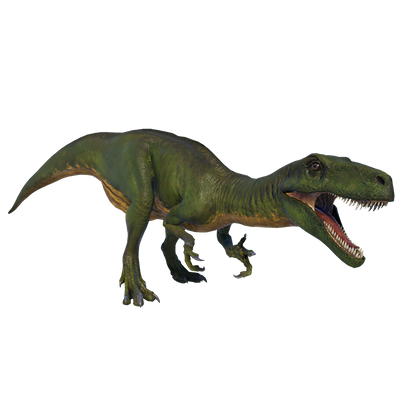

Useful Website
Herrerasaurus is a small theropod, measuring around 4.5m in length and 200kg in weight. It is one of the earliest known dinosaurs, dating back to the Late Triassic period. With a light frame that allow it to run very quickly and large, jagged teeth that help it to latch onto prey, Herrerasaurus feeds on smaller herbivores.
